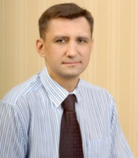
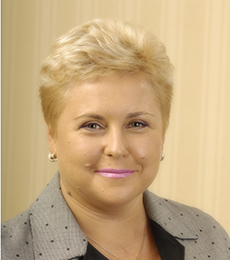
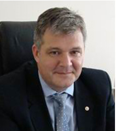
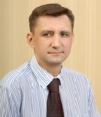
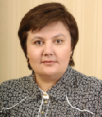

<!DOCTYPE html>
<html>
<head>
    <meta charset="UTF-8"/>
    <link href="css/style.css" rel="stylesheet" type="text/css">
    <link href='http://fonts.googleapis.com/css?family=PT+Sans+Narrow:400,700&subset=cyrillic-ext' rel='stylesheet'
          type='text/css'>
    <title>Руководство</title>
    <script src="js/jquery-1.11.1.min.js"></script>
    <script src="js/jquery.slides.min.js"></script>
    <script src="js/simple-expand.min.js"></script>
    <!--[if IE 8]>
    <link href="css/ie-style.css" rel="stylesheet" type="text/css">
    <![endif]-->
</head>
<body>
<div class="main_container">
<div class="background_header"></div>
<div class="container_header wrapper">
    <div class="header">
        <div class="pte_logo">
            <a href="#">
                
            </a>
        </div>
        <div class="choose_location">
            <a class="location_link" href="#">
                <span class="dashed">Санкт-Петербург</span>
                
            </a>
            <ul class="drop_down location_menu">
                <li><a class="location_link" href="#">Cанкт Петербург</a></li>
                <li><a class="location_link" href="#">Карелия</a></li>
            </ul>
        </div>
        <div class="icons_and_search">
            <a href="#">
                <div class="icon home sprite">
                </div>
            </a>
            <a href="#">
                <div class="icon site_map sprite">
                </div>
            </a>
            <a href="#">
                <div class="icon mail sprite">
                </div>
            </a>

            <div class="search-field">
                <form name="search" action="/search" method="get" class="search_form">
                    <input type="text" name="q" id="search_on_site">
                    <button type="submit" name="search-button" id="search_button" class="sprite"></button>
                </form>
            </div>

            <div class="phone_number">+7 (812) 334-50-60</div>
        </div>
    </div>
    <div class="nav_top">
        <ul class="menu_header">
            <li class="selected">
                <a href="#">О компании</a>

                <ul class="drop_down nav_menu">
                    <li>
                        <a href="#">История компании</a>
                    </li>
                    <li>
                        <a href="#">Руководство</a>
                    </li>
                    <li>
                        <a href="#">Сотрудники компании, награжденные почетными наградами </a>
                    </li>
                    <li>
                        <a href="#">Реконструкция</a>
                        <ul class="sub_drop_down">
                            <li><a href="#">Петроградский район</a></li>
                            <li><a href="#">Курортный район</a></li>
                            <li><a href="#">Петродворцовый район</a></li>
                            <li><a href="#">Центральный и Адмиралтейский районы</a></li>
                            <li><a href="#">Пушкинский район</a></li>
                        </ul>
                    </li>
                    <li>
                        <a href="#">Раскрытие информации</a>
                    </li>
                    <li>
                        <a href="#">Вакансии</a>
                    </li>
                    <li>
                        <a href="#">Контакты</a>
                    </li>
                </ul>
            </li>
            <li>
                <a href="#">Абоненту</a>
                <ul class="drop_down nav_menu abonentu">
                    <li><a href="#">Тарифы</a></li>
                    <li><a href="#">Приборы учета</a></li>
                    <li><a href="#">Подключение к теплоснабжению</a></li>
                    <li><a href="#">Телефоны аварийных служб</a></li>
                    <li><a href="#">Часто задаваемые вопросы</a></li>
                </ul>
            </li>
            <li>
                <a href="#">Пресс-служба</a>
                <ul class="drop_down nav_menu press">
                    <li><a class="press_menu" href="#">СМИ о нас</a></li>
                    <li><a class="press_menu" href="#">Контакты</a></li>
                </ul>
            </li>
            <li>
                <a class=href="#">Контакты</a></li>
        </ul>
    </div>
</div>
<div class="wrapper">
<div class="navigation"><a href="#"><span class="uppercase">О компании</span></a> &#62; Руководство</div>
<h1 class="heading position">Руководство</h1>

<div class="green_block main_text ceo_intro">
    <p class="first_item">Высшим органом управления в ООО «Петербургтеплоэнерго» является общее собрание участников.
        Единственным
        участником Общества является ОАО «Межрегионтеплоэнерго», г. Москва, осуществляющее все функции,
        предусмотренные федеральным законодательством и Уставом Общества.</p>

    <p>Постоянно действующим органом управления и контроля над деятельностью исполнительных органов Общества
        является Совет директоров. В настоящее время избранными членами Совета директоров Общества являются:</p>
    <ul>

        <li><span class="uppercase">Богорад</span> Леонид Максимович – генеральный директор ОАО
            «Межрегионтеплоэнерго»;
        </li>

        <li><span class="uppercase">Громов</span> Сергей Николаевич – первый заместитель генерального директора ОАО
            «Межрегионтеплоэнерго»;
        </li>

        <li><span class="uppercase">Постникова</span> Надежда Алексеевна – заместитель генерального директора ОАО
            «Межрегионтеплоэнерго» по
            экономике
            и финансам;
        </li>

        <li><span class="uppercase">Казаченков</span> Валентин Захарьевич – генеральный директор ЗАО «Газпром
            межрегионгаз Санкт-Петербург»;
        </li>

        <li><span class="uppercase">Густов</span> Сергей Вадимович – генеральный директор ООО
            «Петербургтеплоэнерго»;
        </li>
    </ul>

    <p>Совет директоров работает на постоянной основе и осуществляет все функции, предусмотренные федеральным
        законодательством и Уставом компании.</p>
</div>
<div class="ceo_block" id="gustov_block">
    

    <div class="ceo_text green_block main_text">
        <p class="name first_item"><span class="uppercase">Густов</span> Сергей Вадимович,</p>

        <p>Генеральный директор</p>

        <p>Выпускник Санкт-Петербургского государственного горного института им. Г.В. Плеханова. В 1995
            закончил аспирантуру и защитил диссертацию на соискание ученой степени кандидата технических наук.
            В 1996/98 гг. работал проректором по международным связям Санкт-Петербургского государственного горного
            института им. Г.В. Плеханова. В 1998/2004 гг. занимал должности заместителя генерального директора в
            Филиале ООО «Межрегионгаз» по Ленинградской области и Республике Карелия и ООО «Петербургрегионгаз».
            В 2004/2008 г.г. работал генеральным директором ООО «Петербургтеплоэнерго» и ООО «ПетербургГаз».</p>

        <p>С марта 2008 года по настоящее время − генеральный директор ОАО «Газпром газораспределение» и ООО
            «"Петербургтеплоэнерго».</p>
    </div>
</div>
<div class="ceo_block" id="buzin_block">
    

    <div class="ceo_text green_block main_text">
        <p class="name first_item"><span class="uppercase">Бузин</span> Вячеслав Анатольевич,</p>

        <p>Первый заместитель генерального директора</p>

        <p>Выпускник Санкт-Петербургского государственного горного института им. Г.В. Плеханова. В период 1993/98
            гг. работал горным мастером и начальником смены в АО «Прокопьевскуголь» в городе Прокопьевск Кемеровской
            области. В 1998/2002 гг. занимал различные управленческие должности в филиалах ООО «Межрегионгаз» и ООО
            «Петербургрегионгаз».
            В 2002/2004 гг. – Генеральный директор ООО «Петербургская торгово-промышленная компания».
            С 2004 г. Заместитель генерального директора по перспективному развитию ООО «Петербургтеплоэнерго». С
            2008 г. Первый заместитель генерального директора ООО «Петербургтеплоэнерго».
        </p>
    </div>
</div>
<div class="ceo_block" id="peril_block">
    

    <div class="ceo_text green_block main_text">
        <p class="name first_item"><span class="uppercase">Периль</span> Елена Владимировна,</p>

        <p>Заместитель генерального директора по экономике и финансам, Заслуженный экономист Российской
            Федерации</p>

        <p>Выпускница Экономического факультета СПб ГУ. В 2002 г. получила квалификационный аттестат аудитора в ЦАЛК
            МФ РФ. С 1993 г. работала на дочерних предприятиях ОАО «Газпром»: в 1993/97 гг. – экономистом и ведущим
            экономистом в компании «Лентрансгаз»; в 1997/1999 гг. занимала должность начальника
            финансово-экономического отдела Санкт-Петербургского филиала ООО «Межрегионгаз». В 1999/2004 работала в
            должности заместителя генерального директора по экономике ЗАО «Потенциал – Строй» и заместителя
            генерального директора по финансам ООО ТД «СПб-Ресурс-МРГ».</p>

        <p>С 2004 г. Заместитель генерального директора по экономике и финансам ООО «Петербургтеплоэнерго».</p>

        <p>За заслуги в области экономики и финансовой деятельности и многолетнюю добросовестную работу Указом
            Президента Российской федерации от 19.10.2013 № 783 присвоено звание «Заслуженный экономист Российской
            Федерации»</p>
    </div>
</div>
<div class="ceo_block" id="kochnev_block">
    

    <div class="ceo_text green_block main_text">
        <p class="name first_item"><span class="uppercase">Кочнев</span> Евгений Викторович,</p>

        <p>Заместитель генерального директора по капитальному строительству и инвестициям</p>

        <p>В 1999 году окончил Санкт-Петербургский Государственный горный институт им. Г.В.Плеханова (технический
            университет). В период 1999/2004 г.г. работал на инженерных должностях в ООО (ЗАО)
            «Петербургрегионгаз». </p>

        <p>В ООО «Петербургтеплоэнерго» работает с декабря 2004 года в должности начальника технического отдела, с
            мая 2005 года – начальник управления капитального строительства. </p>

        <p>2008 г. – март 2010 г. Заместитель генерального директора по перспективному развитию ООО
            «Петербургтеплоэнерго». </p>

        <p>С апреля 2010 г. Заместитель генерального директора по капитальному строительству и инвестициям ООО
            «Петербургтеплоэнерго».</p>
    </div>
</div>
<div class="ceo_block" id="grachev_block">
    

    <div class="ceo_text green_block main_text">
        <p class="name first_item"><span class="uppercase">Грачев</span> Вадим Валентинович,</p>

        <p>Заместитель генерального директора - главный инженер</p>

        <p>В 1993 г. Грачев В.В. окончил Ивановский государственный энергетический университет им. В.И. Ленина по
            специальности «промышленная теплоэнергетика», в 1998 г. – получил второе высшее профессиональное
            образование в государственной академии управления им. С. Орджоникидзе (г. Москва) по специальности
            «менеджмент».</p>

        <p>Грачев В.В. прошел путь от начальника участка до директора предприятия в системе жилищно-коммунального
            хозяйства Республики Карелия, за трудовые заслуги в 2006 году получил Нагрудный Знак «Почетный работник
            жилищно-коммунального хозяйства Республики Карелия». </p>

        <p>С 2007 года – начальник Петродворцового района теплоснабжения ООО «Петербургтеплоэнерго».</p>

        <p>В 2008 г. Грачев В.В. награжден Почетной грамотой Комитета по энергетике и инженерному обеспечению
            Санкт-Петербурга.</p>

        <p>С 01.04.2010 Грачев Вадим Валентинович назначен исполняющим обязанности заместителя генерального
            директора – главного инженера.</p>

        <p>С 23.04.2010 Грачев Вадим Валентинович назначен заместителем генерального директора – главным
            инженером.</p>
    </div>
</div>
<div class="ceo_block" id="nikolaeva_block">
    

    <div class="ceo_text green_block main_text">
        <p class="name first_item"><span class="uppercase">Николаева</span> Оксана Михайловна,</p>

        <p>Главный бухгалтер</p>

        <p>Выпускница Ленинградского финансово-экономического института имени Н.А. Вознесенского. В 1983/1994 гг.
            работала в Главном управлении Капитального строительства Ленгорисполкома (в настоящее время – Комитет по
            строительству). В 1994/2005 гг. занимала должности главного бухгалтера в крупных компаниях
            Санкт-Петербурга, в том числе в ОАО «Царскосельская Энергетическая Компания». Член Института
            профессиональных бухгалтеров с 2000 года.</p>

        <p>С 2005 года является главным бухгалтером ООО «Петербургтеплоэнерго».</p>
    </div>
</div>
<div class="ceo_block" id="cheremovsky_block">
    

    <div class="ceo_text green_block main_text">
        <p class="name first_item"><span class="uppercase">Черемовский</span> Александр Алексеевич,</p>

        <p>Директор филиала ООО «Петербургтеплоэнерго» в Республике Карелия</p>

        <p>В 2005 г. окончил Санкт-Петербургский юридический институт по специальности «юриспруденция». В период
            2002/2009 гг. работал юрисконсультом в крупных компаниях Республики Карелия. С 2010 по 2011 гг. проходил
            государственную службу в качестве советника главы Прионежского муниципального района. С сентября 2011
            года работал юрисконсультом Филиала ООО «Петербургтеплоэнерго» в Республике Карелия. 11 сентября 2012
            года назначен директором Филиала ООО «Петербургтеплоэнерго» в Республике Карелия.</p>
    </div>
</div>
<div class="ceo_gallery">
    <div class="ceo_picture">
        <a href="#" class="ceo_link" id="gustov">
            
            <span class="uppercase">Густов</span></br>Сергей Вадимович</a>

        <p>Генеральный директор</p></div>
    <div class="ceo_picture">
        <a href="#" class="ceo_link" id="buzin">
            
            <span class="uppercase">Бузин</span><br>Вячеслав Анатольевич
        </a>

        <p>Первый заместитель генерального директора</p></div>
    <div class="ceo_picture">
        <a href="#" class="ceo_link" id="peril">
            
            <span class="uppercase">Периль</span></br>Елена Владимировна
        </a>

        <p>Заместитель генерального директора по экономике и финансам, Заслуженный экономист Российской
            Федерации</p></div>
    <div class="ceo_picture">
        <a href="#" class="ceo_link" id="kochnev">
            
            <span class="uppercase">Кочнев</span></br>Евгений Викторович
        </a>

        <p>Заместитель генерального директора по капитальному строительству и инвестициям</p></div>
    <div class="ceo_picture">
        <a href="#" class="ceo_link" id="grachev">
            
            <span class="uppercase">Грачев</span></br>Вадим Валентинович
        </a>

        <p>Заместитель генерального директора – главный инженер</p></div>
    <div class="ceo_picture">
        <a href="#" class="ceo_link" id="nikolaeva">
            
            <span class="uppercase">Николаева</span></br>Оксана Михайловна
        </a>

        <p>Главный бухгалтер</p></div>
    <div class="ceo_picture">
        <a href="#" class="ceo_link" id="cheremovsky">
            
            <span class="uppercase">Черемовский</span></br>Александр Алексеевич
        </a>

        <p>Директор филиала ООО «Петербургтеплоэнерго»
            в Республике Карелия</p></div>
</div>
</div>
<div class="footer">
    <div class="wrapper">
        <div class="address white">
            <span>194044 Санкт-Петербург, Б.
                    Сампсониевский пр., д. 60</span>
        </div>
        <div class="phone white"><span>+7 (812)
                    334 50 60</span>
        </div>
    </div>
</div>
<div class="on_top"><a href="#" onclick="window.scrollTo(0,0); return false;">наверх</a></div>
</div>
<script src="js/main.js"></script>
</body>
</html>